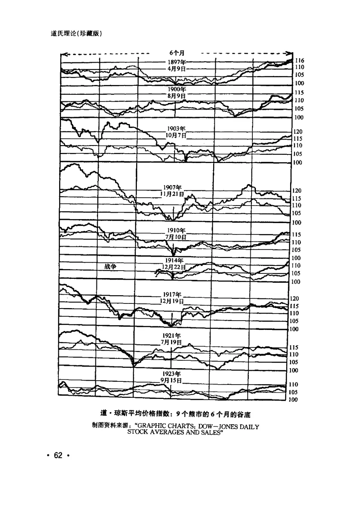
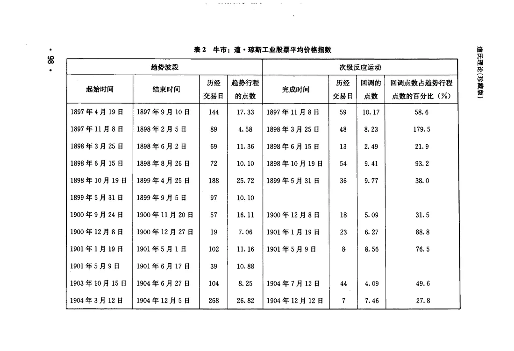
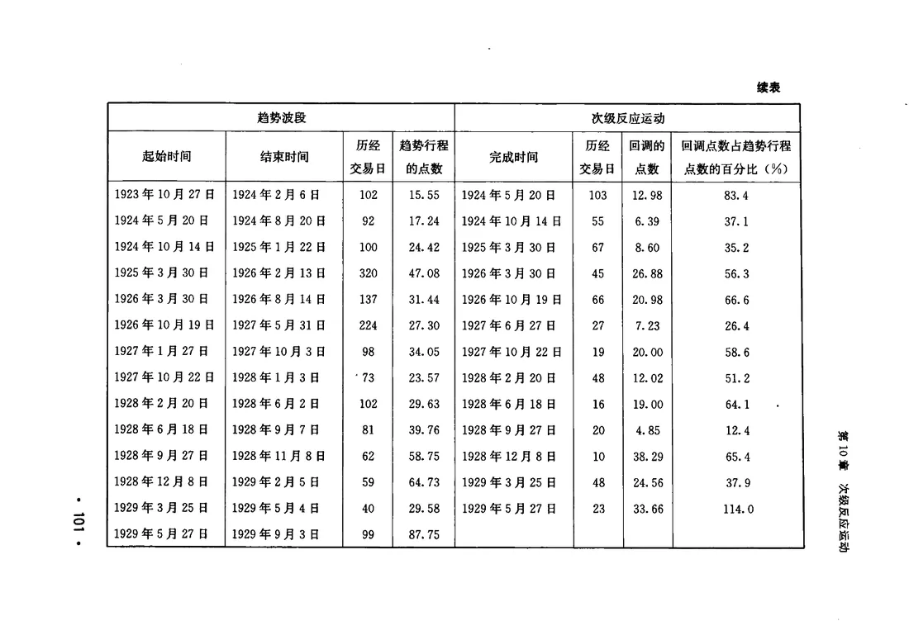
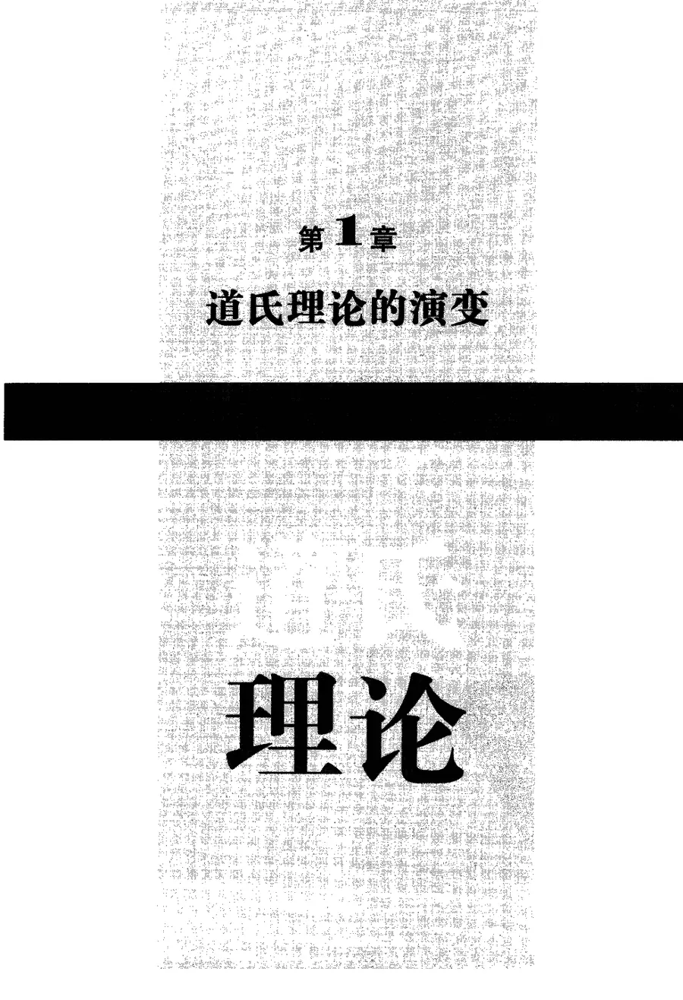

指数消溶一切
价格是所有参与者希望、失望与知识的加权结果。战争、利率、政治、收成，最终都会进入买卖行为。
DISCOUNTRHEA1932珍藏版
THE DOW THEORY
一部写于大萧条深处的书。它把查尔斯·道的观察、汉密尔顿的评论，整理成一套关于趋势、确认与纪律的语言。
继续阅读 第 1 章 · 道氏理论的演变MARKET BAROMETER
1929 · 秋
道琼斯工业平均指数，1929 年 9 月 3 日至 11 月 13 日
00 / 写在前面
“股市不是像一个在风中四处飘飞的气球。总体而言，股市代表了具有远见的和消息灵通的人士，通过严肃认真的周密思考，把股票的价格调整到现有价值，或者在不远的将来所期待的价值。
查尔斯·H·道，1901 年
这不是一本教你“预测明天”的书。它讨论的是更慢、也更难的东西：如何辨认一轮主要趋势，如何区分回调与反转，以及如何在两个指数、成交量和时间之间，等待一个足够可靠的确认。
我们用原书 2013 年珍藏版的扫描页做了逐页 OCR，保留完整正文，并为每一章补写了导读、要点与可交互的图示。文字与原书影印并排呈现，方便你随时回到纸面。
01 / 理论精要
道氏理论不是一套指标组合，而是一组关于市场如何运作的判断。先接受这些前提，后面的章节才有意义。
价格是所有参与者希望、失望与知识的加权结果。战争、利率、政治、收成，最终都会进入买卖行为。
DISCOUNT主要趋势像潮汐，次级反应像波浪，日间波动像涟漪。三者不在同一个时间尺度上，不能混为一谈。
THREE MOVEMENTS工业与铁路，两条腿走路。一个指数的新高或新低，若没有另一个确认，通常是假象。
CONFIRMATION高点抬高、低点抬高是牛；高点降低、低点降低是熊。趋势持续，直到被明确的反向证据推翻。
STRUCTURE它确认趋势，却不能替代趋势。牛市低量起步、高量收场；回调缩量，往往是健康信号。
VOLUME双顶、双底、单根大阳线，都只是市场留下的痕迹。真正决定判断的，是两个指数是否同向、高低点是否被突破。
02 / 三种运动
同一个星期的下跌，可能是一次日间噪音、一次次级回调，也可能是主要趋势的反转。区别不在幅度，而在结构。
PRIMARY / 潮汐
整体向上或向下的运动，也就是牛市或熊市。它决定你应当站在哪一边。道氏理论的大部分工作，都在确认它是否仍在继续。
“正确地确定主要运动的方向是成功投机的最重要的因素。”
示意图：三种运动叠加在同一张价格图上。点击左侧标签，单独查看其中一层。
03 / 趋势解剖
阶段不是日历，而是参与者的心理与资金结构。它们会重叠、会提前、会失败，但顺序很少完全颠倒。
信心恢复 → 盈利改善 → 投机狂热
价格从低估中回到公认价值。市场仍然沉闷，坏消息还在，但卖压已经消失。牛市通常不会以激烈波段开始。
商业环境好转，盈利数据被价格确认。这是牛市中最长、也最容易出现次级回调的阶段。
价格开始由希望和预期支撑。成交量放大，公众广泛参与，优质股的股息率反而不如债券。
04 / 互相确认
工业与铁路，必须同向。一个指数先走一步，可能只是假象；两个指数都确认，趋势才有足够的分量。
一个指数的新高，若没有另一个确认，结论通常是假象。它可能是一次次级反弹，也可能是少数股票制造的错觉。
两个指数同向突破，趋势才被确认。确认不要求同一天发生，但方向最终必须一致；一旦确认，趋势会持续到被反向证据推翻。
05 / 章节目录
从源流、假设，到趋势、确认、形态与纪律。带红点的五章，是理解整套方法的最短路径。
从道的观察到汉密尔顿的体系，再到雷亚的整理。
把散落在评论里的方法，整理成一组可以逐条检验的假设。
日间波动可以被推动，主要趋势却不能被人为制造。
价格不是对过去的记录，而是对未来的集体预期。
它是一门像外科手术一样的实践技艺，而不是一台预测机器。
潮汐、波浪与涟漪：三种运动同时发生，却不在同一个尺度上。
方向比点位重要，持续时间无法被精确预测。
希望破灭、景气收缩、被迫清仓：熊市的三段式。
信心恢复、盈利改善、投机狂热：牛市也会分三段走。
趋势的安全阀，也是最容易被误认为反转的那一段。
单日波动不是信号，除非它最终拼成一个形态。
工业与铁路，两条腿走路；一条腿迈出去，不算前进。
高点抬高、低点抬高是牛；高点降低、低点降低是熊。
沉默的横盘区，往往比一根大阳线说了更多。
成交量是燃料表，不是方向盘；它确认趋势，不能替代趋势。
市场喜欢画“双顶”，但真正的顶底很少按图施工。
先看潮汐，再看船；大多数个股游不出大盘的方向。
投机是一门生意：需要研究、耐心、止损与独立判断。
汉密尔顿的边角料，往往比正式理论更接近市场。
19 章全文、章节导读、原书影印与全文检索。
06 / 原书图谱
熊市底部的九组走势、三十五年统计表、被旋转印刷的附录。图表是雷亚的论据，也是这本书的时间胶囊。




点击任意图片查看大图。各章正文影印页已放入对应阅读页，可在页面底部“原书影印”中翻阅。
07 / 时间线
这套理论不是一次发明的。它经过两代人的观察、误判、修正，最后在 1932 年的大萧条底部被写成书。
从报纸编辑到道琼斯公司的创办者。
两年后，《华尔街日报》创刊。
最初只有 12 只股票；1897 年分为铁路与工业两组。
尼尔森在《股票投机常识》中首次提出“道氏理论”。
汉密尔顿把二十多年的评论整理成书。
10 月 25 日《趋势的反转》；汉密尔顿于年底去世。
同年，美股在深渊中触底。

08 / 关于这本书
罗伯特·雷亚（Robert Rhea）长期卧病，却把全部精力用于研究市场。他在 1932 年写下这本书，把道与汉密尔顿的观察整理成一套可以学习、可以练习、也可以失败的方法。
本网站以地震出版社 2013 年刘志刚译本为底本，逐页 OCR 整理。原书为扫描版，文字中可能残留少量形近字识别误差；每章都保留影印页，方便对照。